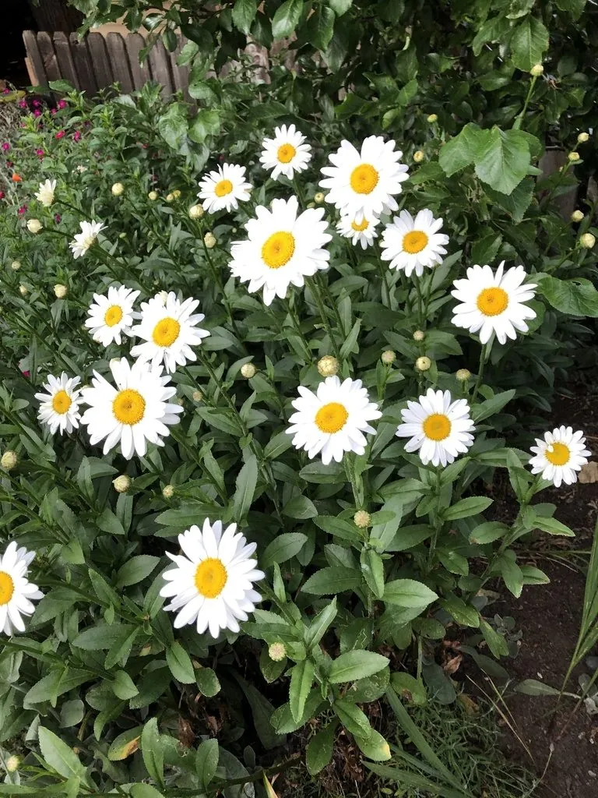

花卉与草本 · 植物界
大滨菊 Leucanthemum maximum

菊科滨菊属多年生草本，舌状花洁白、管状花金黄，花大似雏菊，是夏季花境和切花中清新素雅的白花材料。
- 分类
- 门被子植物门纲木兰纲目菊目科菊科属滨菊属
- 栖息环境
- 原产欧洲山地草甸，栽培于花境，喜凉爽、耐寒
- 地理分布
- 原产法国比利牛斯山与西班牙北部；中国各地引种栽培
- 保护级别
- 暂无评估；栽培观赏植物，不涉及保护等级
物种志
大滨菊为菊科滨菊属多年生草本，高四十至九十厘米，茎直立，不分枝或稀分枝。叶片互生，披针形至倒卵形，边缘具粗齿，基生叶较大。头状花序单生，直径可达十厘米，舌状花白色、多枚，管状花金黄色，花期五月至七月；瘦果具冠毛，成熟时褐色，果期七月至九月。
大滨菊原产法国比利牛斯山和西班牙北部，中国各地引种栽培。它喜光、耐寒，喜凉爽湿润，适宜疏松肥沃、排水良好的土壤，忌高温高湿和积水。花大洁白、花心金黄，清新素雅，是花境、庭院和切花的常用材料，成片种植如白色花海；也可作背景花材。花后修剪残花可延长观赏期，每两三年分株一次可保持长势。
形态与习性
- 株高40–90 cm，茎直立
- 花期5–7 月，舌状花白色
- 果期7–9 月，瘦果具冠毛
- 光照喜光，全日照开花好
- 水分喜湿润，忌积水
- 土壤疏松肥沃、排水良好
- 主要用途花境、庭院与切花
趣味知识
- 大滨菊的花序直径可达十厘米，是滨菊属中花最大的种类之一。
- 它的白色舌状花在清晨初开时略带粉色，午后转为纯白。
- 大滨菊耐寒，在北方可露地越冬，是夏季花境中的清爽白花。